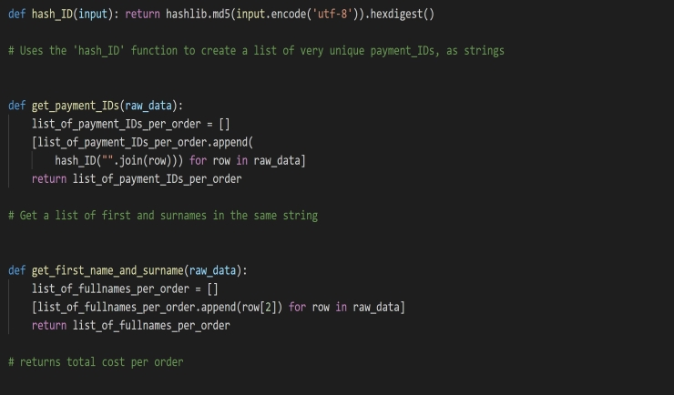
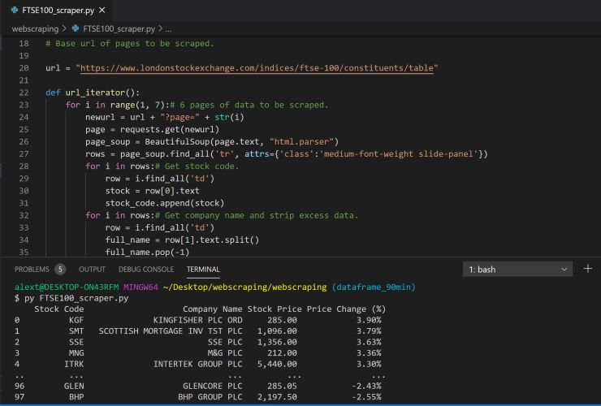
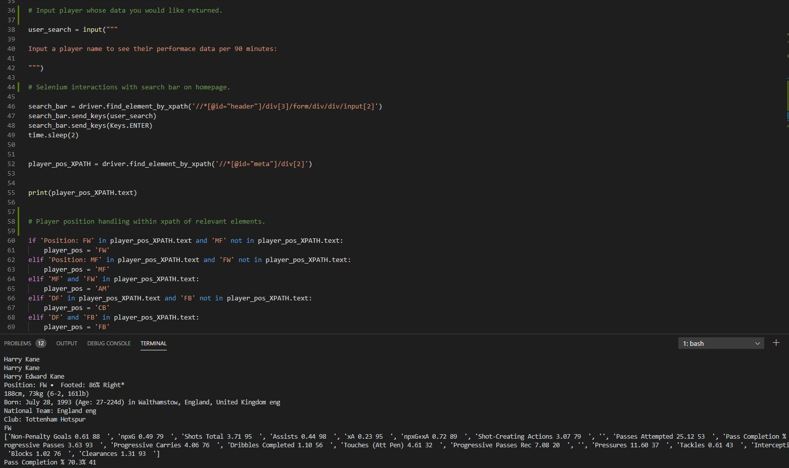
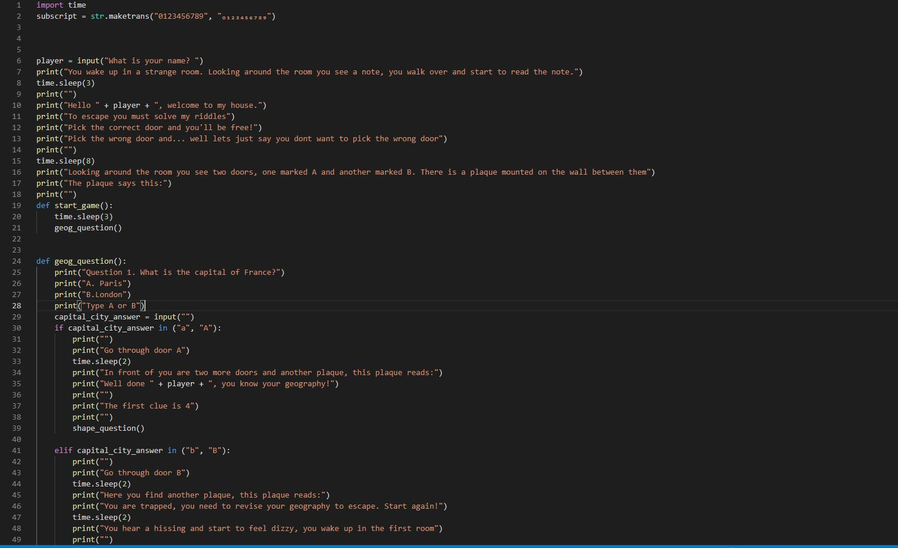

This was a group project in which my team and I created an ETL pipeline that was able to convert raw CSV files into a format where the relevant information could be input into a redshift database.
Technologies used include: Python, SQL, Serverless, AWS (S3, Lambda, Cloudwatch, CodePipeline, IAM etc.), psycopg2, boto3 and more.

I created a pair of web scrapers that go to the relevant pages on the London Stock Exchange Website and prints the days trading statistics to the terminal. This could easily be amended to take actions if certain trading parameters were met. I am currently working on inputting the data into a MySQL database for future data analysis.
Technologies used include: Python, BeautifulSoup, requests, NumPy, pandas.

This web scraper was built using Selenium and is able to interact with the Fbref website, search player names and return their performance data.
Technologies used include: Python, Selenium, NumPy, pandas

Alcatraz House Game
This game was built as part of a group during my recent enrolment on the Code Nation - Develop Course.